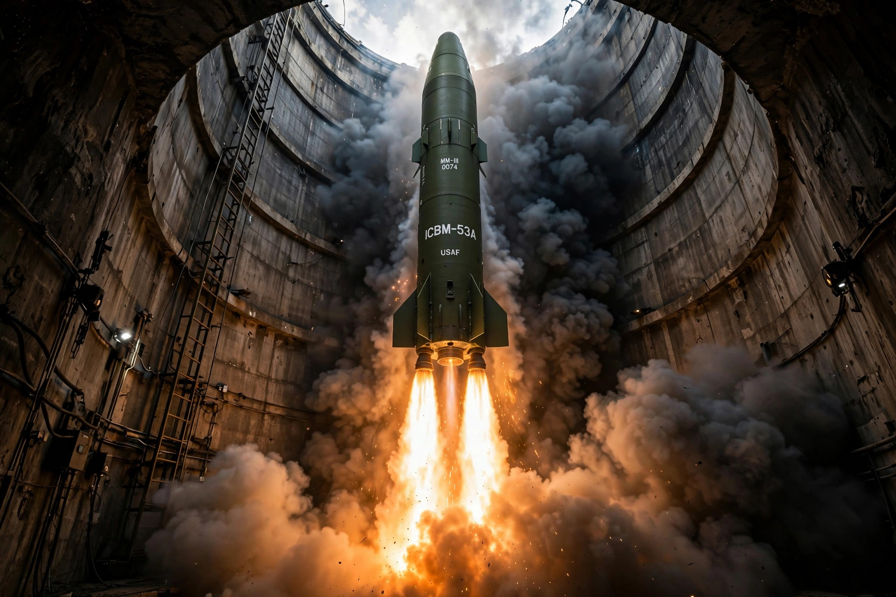

From Wikipedia, the free encyclopedia

Nuclear deterrence is the military doctrine that the threat of retaliation with nuclear weapons prevents an adversary from using nuclear weapons or undertaking other aggressive actions, because the costs of retaliation would outweigh any possible gain. Deterrence is a strategy intended to dissuade an adversary from taking an action not yet started, distinct from compellence, which seeks to change behaviour already under way.
Classical deterrence theory holds that a deterrent threat must be capable (the retaliatory forces must survive a first strike and be able to inflict unacceptable damage), credible (the adversary must believe the threat would actually be carried out), and communicated (the adversary must understand what action will trigger retaliation). The assurance of a devastating second-strike capability — carried by submarines, mobile missiles, and dispersed bombers — underpins the nuclear triads maintained by the United States and Russia.
The doctrine emerged after 1945 as strategists such as Bernard Brodie recognised that the absolute weapon had made the purpose of military establishments the aversion, rather than the winning, of wars. It was elaborated during the Cold War into doctrines of massive retaliation, flexible response, and mutual assured destruction. Thomas Schelling formalised deterrence in game-theoretic terms, analysing threats, commitments, and the deliberate manipulation of risk.
Critics dispute whether nuclear weapons caused the "long peace" between the great powers, pointing to conventional deterrence, memory of the Second World War, and luck in near-miss crises such as the Cuban Missile Crisis of 1962. The stability–instability paradox holds that stability at the nuclear level may license limited conventional conflict below it. Deterrence also poses ethical objections, since its threats, if executed, would kill vast numbers of civilians.